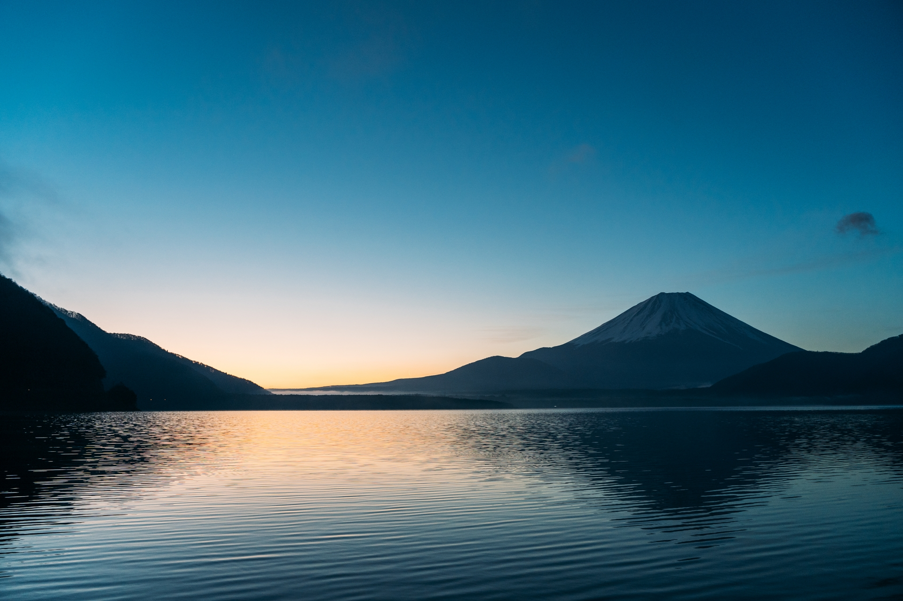

About
feel nature.
キャンプ場Motosukoは、日本の美しい自然環境と、壮大な富士山を背景にした素晴らしいキャンプ体験を提供する場所です。本栖湖の湖畔に位置し、新鮮な空気と透明度の高い湖の美しさが広がっています。当キャンプ場は、自然愛好家やアウトドア愛好家にとって、究極のリラックスとアクティビティの場所として理想的です。
Site
feel time.
キャンプ場Motosukoは、富士山をバックにしたキャンプサイトは、絶好の写真撮影の機会を提供し、夜には満天の星空を楽しむことができます。また、キャンプファイヤーを囲んで友達や家族と楽しい時間を過ごすこともできます。
activity
feel excited.
キャンプ場Motosukoでは、さまざまなアクティビティを楽しむことができます。釣りやハイキング、ボート乗りやカヌー体験など、自然とのふれあいが豊富です。また、近くには美しいトレッキングコースやサイクリングルートがあり、アウトドア愛好家には満足いく冒険が待っています。
Facility
feel comfy.
キャンプ場内には、シャワー設備、トイレ、ピクニックエリア、そしてカフェや食堂が備え付けられています。快適なキャンプ体験をサポートする施設が整っているため、キャンプ初心者から経験者まで、誰でも楽しむことができます。 Motosukoキャンプ場は、自然愛好家やアウトドア好きな人々にとって、絶えず新しい冒険と美しい景色を提供します。富士山の麓での特別な瞬間を共有し、思い出に残るキャンプ体験をお楽しみください。
施設・お食事処
食堂
cafe
NEWS
- 20XX/00/00
- 体験コーナーをリニューアルしました！！！
- 20XX/00/00
- ホームページをリニューアルしました！！！
- 20XX/00/00
- キャンプサイトの料金を変更しましたご確認ください！
- 20XX/00/00
- 予約フォームを開設しました！！！
フォトギャラリー
